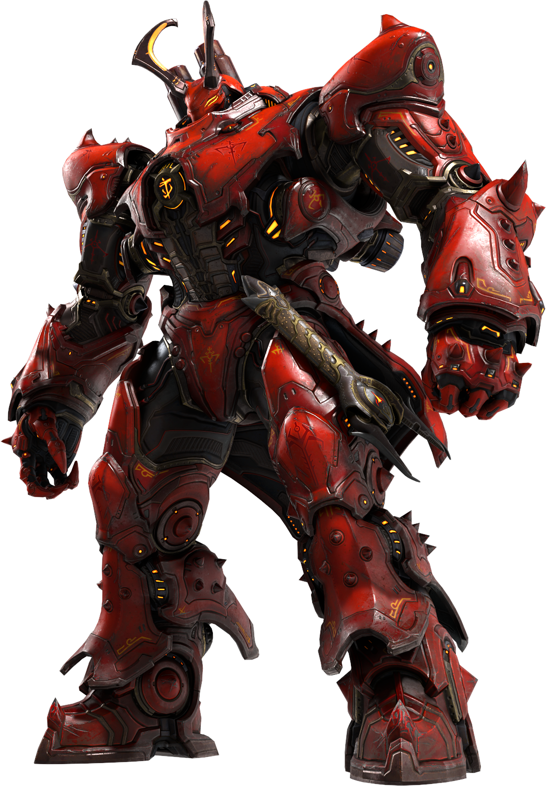
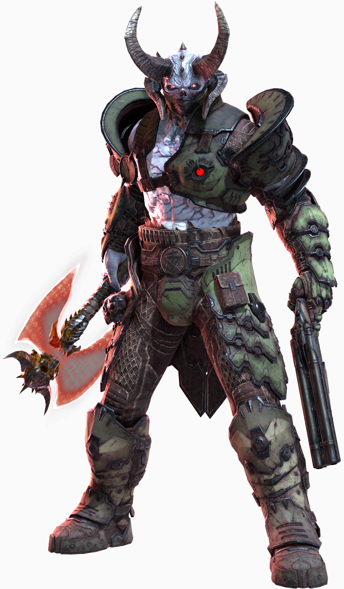
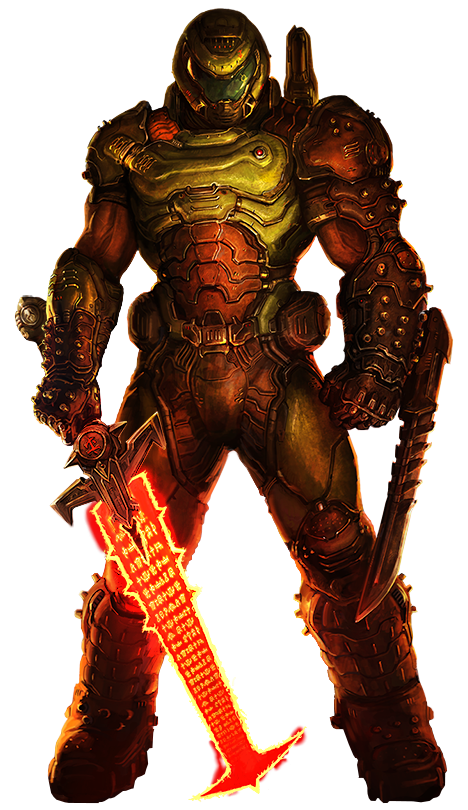

-
Dark Lord
Easy
Descrição
Dark Lord é o título do governante supremo do reino do Inferno. O título parece se referir a qualquer entidade que reivindique domínio sobre o Inferno, com o passado do reino sendo dividido em "eras" baseadas no reinado desses Senhores. O primeiro Lorde das Trevas, Davoth serve como o principal antagonista de Doom Eternal: The Ancient Gods e, por extensão, toda a série Doom.
-
Marauder
Medium
Descrição
Um grupo de Sentinelas da Noite ressuscitados e corrompidos, os Carrascos são aqueles que se aliaram ao Khan Maykr e aos Sacerdotes do Inferno contra o reino de Argent D'Nur, tornando-se sentinelas demoníacas após suas mortes. Como ex-membros do bando pessoal de guerreiros do Doom Slayer, eles têm acesso a uma ampla gama de técnicas muito poderosas que os tornam indiscutivelmente um dos inimigos mais desafiadores que o jogador enfrentará ao longo da campanha.
Icon Of Sin
Hard

Descrição
O Khan Maykr tomou medidas para aumentar o titã, instalando a tecnologia Maykr em toda a sua estrutura para garantir que pudesse ser controlado através de seu coração. Com o ritual interrompido, o Ícone agora está totalmente liberado, percorrendo a Terra até que o Inferno consuma tudo. Não mais preso ao Coração do Filho do Traidor, o Ícone do Pecado está livre de qualquer medida de controle que os Maykrs possam ter concebido. Apenas o Slayer, profetizado na lenda de Argenta para enfrentar o Ícone, pode parar este apocalipse.
Doom Slayer
!Err0r!
Descrição
Os demônios primeiro lhe deram a denominação de "Doom Slayer" e também se referem a ele como o Predador Livre, a Besta e o Andarilho do Inferno. A UAC se refere a ele como DOOM Marine, ou The Slayer.